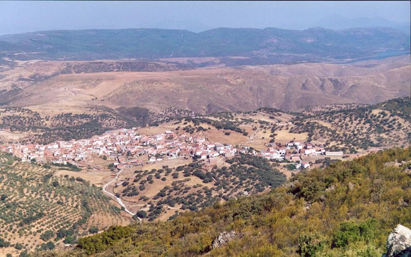

Bienvenidos
Esta es la página web de mi localidad, situada en la Siberia Extremeña. Aquí podrás conocer nuestra historia, fiestas y entorno natural.

Esta es la página web de mi localidad, situada en la Siberia Extremeña. Aquí podrás conocer nuestra historia, fiestas y entorno natural.
